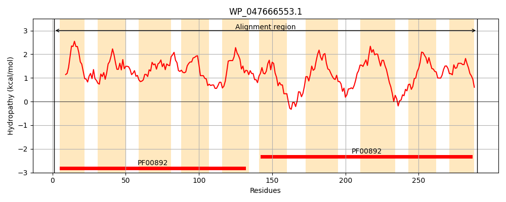
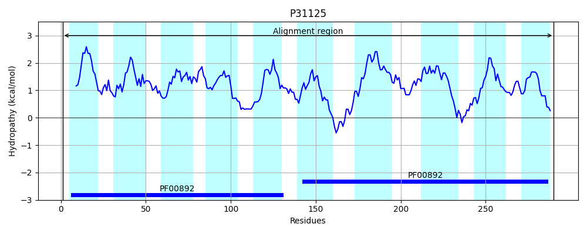
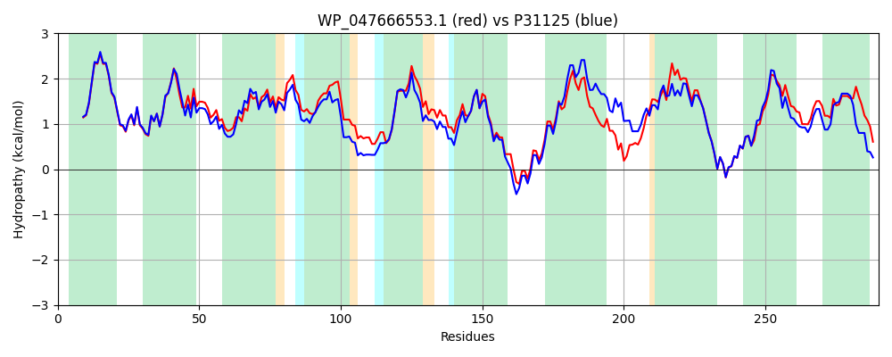

Hit Accession: P31125
Hit TCID: 2.A.7.3.2
Hit Description: gnl|BL_ORD_ID|9750 gnl|TC-DB|P31125|2.A.7.3.2 Probable amino-acid metabolite efflux pump OS=Escherichia coli (strain K12) GN=eamA PE=1 SV=2
Mach Len: 290
e:0.000000
Query TMS Count : 10
Hit TMS Count: 10
TMS-Overlap Score: 9.700000
Predicted Substrates:CHEBI:4050;cysteine, CHEBI:22653;asparagine, CHEBI:5432;glutamine
BLAST Alignment:
Score: 1222 , Bit scores: 475 bits, E-value: 4.3e-171, Alignment length: 290, Percentage identity: 81
Query: 1 MTRKDGLLALLVVVVWGLNFVVIKLGLHNMPPLMLAGLRFMLVAFPALLFVSRPAIPLRLLLGYGLTISFGQFAFLFCAIGLGMPAGLASLVLQAQAFFSIILGAFVFGERLQGKQLAGIALAIFGVLVLVEGSLGGEHVPLVGFMLTLAAALSWACGNIFNKKIMSHAARPPIMSLVVWSALIPVLPFMLASWLIDGPQTMLASLQHIDLLTILSLLYLAFIATIVGYGIWGSLLGRYETWRVAPLSLLVPVVGMASAALLLGETLSGLQLTGAVLIMAGLYINVFGLR 290
M+RKDG+LALLVVVVWGLNFVVIK+GLHNMPPLMLAGLRFMLVAFPA+ FV+RP +PL LLLGYGLTISF QFAFLFCAI GMPAGLASLVLQAQAFF+I+LGAF FGERL GKQLAGIALAIFGVLVL+E SL G+HV ++GFMLTLAAA SWACGNIFNKKIMSH+ RP +MSLV+WSALIP++PF +AS ++DG TM+ SL ID+ TILSL+YLAF+ATIVGYGIWG+LLGRYETWRVAPLSLLVPVVG+ASAALLL E L+GLQ GAVLIM GLYINVFGLR
Sbjct: 1 MSRKDGVLALLVVVVWGLNFVVIKVGLHNMPPLMLAGLRFMLVAFPAIFFVARPKVPLNLLLGYGLTISFAQFAFLFCAINFGMPAGLASLVLQAQAFFTIMLGAFTFGERLHGKQLAGIALAIFGVLVLIEDSLNGQHVAMLGFMLTLAAAFSWACGNIFNKKIMSHSTRPAVMSLVIWSALIPIIPFFVASLILDGSATMIHSLVTIDMTTILSLMYLAFVATIVGYGIWGTLLGRYETWRVAPLSLLVPVVGLASAALLLDERLTGLQFLGAVLIMTGLYINVFGLR 290 | Protein Hydropathy Plots: |
|---|
|  |  |
Pairwise Alignment-Hydropathy Plot:
|
|---|
|  |